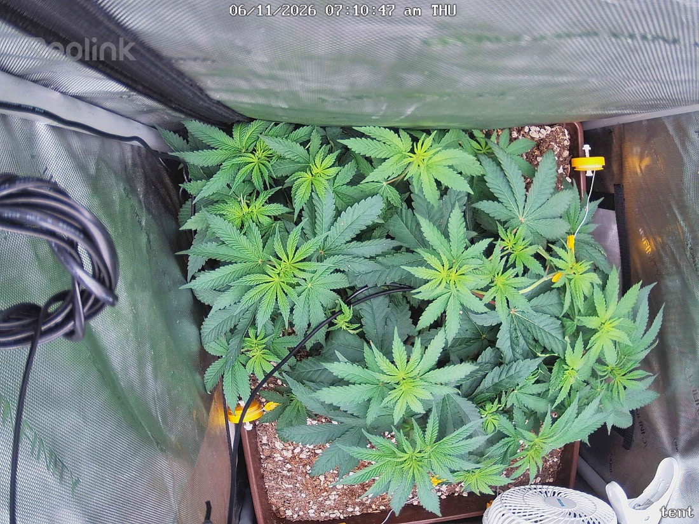

← All reports
Jun 11, 2026
Thu Jun 11, 2026 — 7:10 AM

Prognosis
Grow check — June 11 (day 8 of 12/12 flip)
- What changed: Very little 24h-to-24h, as expected. Canopy is slightly more filled-in toward the front-left; LST ties are holding the spread wide and flat. A new tie-down/clip appears repositioned on the right side. Overall a fuller, more even canopy than yesterday.
- Color/posture: Uniform medium-deep green across the canopy. Leaves are flat and turgid — no tacoing, no clawing, no drooping at lights-on. Lighter green on the newest top growth is normal new-tissue color, not deficiency.
- Mite check: From this top-down resolution I can't resolve stippling, webbing, or moving specks. Nothing jumps out, but the camera angle isn't diagnostic for mites — your close-up undersides inspection is the real read. No new visible damage on upper surfaces vs. yesterday.
- Treatment status: You applied first Green Cleaner round 6/10 (last night). No phytotoxicity showing — no oil-burn spotting, bleaching, or curl from the spray, which is the main thing to watch 24h post-application. Good.
- Soil/structure: Surface looks appropriately dry-ish on top (last watered 6/7, ~4 days — about due). No surface mold, no salt crust. Crowns/no-till material untouched, as intended.
- Phase check: Germinated 4/28, flipped 6/3 → you're ~8 days into 12/12. This is the stretch window; you should expect noticeable vertical/internodal gain over the next 1–2 weeks before bud sites set. Plant is on track — well-built, bushy, multi-cola structure from the topping + LST. No stall.
Suggested next actions:
- Tonight: stay on schedule — Green Cleaner round 2 (3-day cadence puts it ~6/13; rinse/spray undersides to dripping, lights-off). Keep inspecting undersides each application to confirm mite knockdown.
- Water is about due (4-day cadence, last 6/7) — plan a bottom water in the next day if soil is dry an inch down.
- Hold light at ~600 through early stretch; fine to ease toward 700 once stretch slows and you confirm zero light stress.
Overall: Healthy, vigorous, well-trained plant in early flower stretch — no new stress signs and no spray damage; just stay the course on the mite protocol.